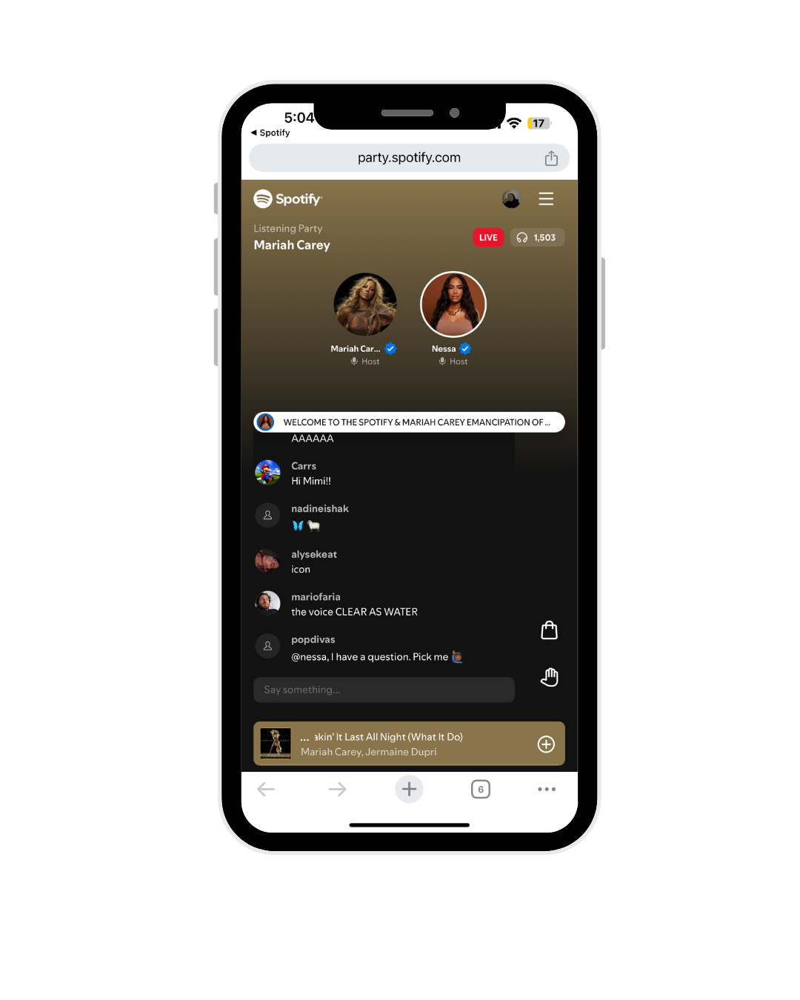

I'm a product minded Content Designer with a cross-industry background spanning music tech, finance, and commerce. Using AI-assisted tools, I move from strategy and UX design through prototyping and implementation—bringing clarity, creativity, and execution to every stage of the product experience.
Get in touchExplore More
Case studies showcasing how I use content design, UX strategy, and AI-powered prototyping to move ideas from concept to working experiences.
Unlocking deeper connection and commerce by transforming how fans and artists engage with music.
People come to Spotify to listen, but what if listening could unlock deeper moments of connection, and connection could unlock commerce?
Lead Content Designer — I owned all content and decisions on how it was displayed across the product experience.

Building a scalable commerce platform that unlocks a new revenue stream for artists and introduces fans to shopping on Spotify.
Fans have a relationship with Spotify through listening, but building a commerce relationship is an entirely different story. There was already poor user sentiment toward the existing merch solution.
Lead Content Designer — I owned all content and decisions on how it was displayed across the product experience.
I design product experiences that help people accomplish what they came to do.
My background spans music tech, finance, and commerce, where I've led content strategy, shaped user experiences, and built scalable systems that connect business goals with user needs.
Today, I use AI-assisted tools to move beyond recommendations and prototypes—designing, testing, and shipping experiences that bring ideas to life faster.
I thrive in collaborative environments where I can partner closely with product, design, research, and cross-functional teams. I'm equally comfortable diving deep into data analysis, facilitating design workshops, or iterating on microcopy.
Outside of work, you'll find me exploring live music, attending art events, practicing barre, and writing essays about self-discovery on my Substack.
UX Writing, Positioning, messaging frameworks, content mapping, tone & voice
UX strategy, user flows, prototyping, AI-assisted development, front-end implementation
Content frameworks, design systems, governance, scalable language patterns
Workshops, stakeholder alignment, cross-functional collaboration, strategy development
User interviews, synthesis, language audits, data-informed decision making
Cursor, Figma, Claude, Google Gemini, Google Workspace, Analytics, Amplitude